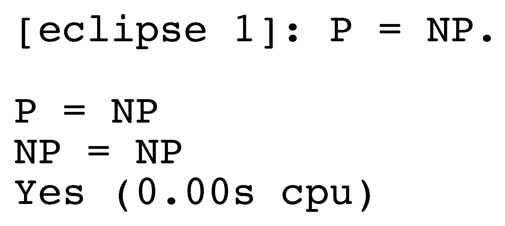

Problem Statuses

The Status Quo
- Quantity, quality, meaning ...
- yes to ND proofs
- Unsatisfiable theorems
- Need correct and precise statuses
Goals for the Ontology
- Base on model theoretic principles
- Aware of the practicalities of automated reasoning
- Reasonably fine grained
- Usable for both system output and problem status